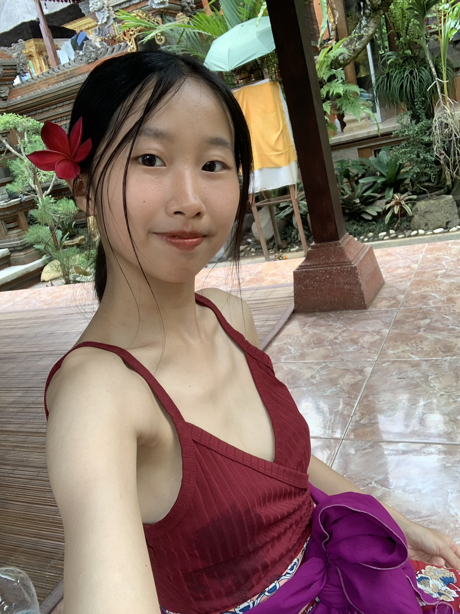

十月的新月，落在天秤座。
天秤是最懂關係的星座。它讓我們敏感、體貼，總能第一時間感覺到——這個空間裡，誰不舒服了，哪裡失衡了。
所以我們很會照顧。照顧另一半的情緒、孩子的需要、長輩的臉色、朋友的難處。我們把每一段關係，都調得妥妥貼貼。
而在關係裡，我們也不只有愛——還有摩擦、糾結、考驗、害怕、憤怒。這些，同樣值得被好好看見，好好整理。
這不是妳軟弱。這是天秤最深的溫柔，也是它最容易受的傷。
讀空氣、接情緒、把每個人都照顧到。維持關係的和諧，是妳的本能，也是妳的天賦。這份細膩，讓身邊的人，都能靠著妳安穩下來。
問問自己：在這段關係裡，我好嗎？我想要的，說出口了嗎？把那份對別人的體貼，也留一份給自己——這，才是天秤真正的平衡。
這一晚，我們用身體，走一趟關係的整理——從與大地連結，到回望，再到釋放。
與蓋婭連結，穩住自己的根，回到身體與當下。
如跑馬燈般回顧生命中的重要關係，看見反覆出現的情緒、恐懼、需要與關係模式。
透過音樂與舞動，釋放關係中累積的壓力與決定鬆手的生命模式，回到靈魂的家。
新月，是月亮走到最暗的那一晚——不是消失，是休息。在占星裡，這是一個循環的起點：適合向內、適合休息，適合在黑暗裡，輕輕種下一個新的意圖。
天秤座掌管的是關係、平衡與和諧。它的禮物，是讓我們懂得靠近、懂得合作、懂得把人與人之間，調得柔軟。而它的功課，是學會——把自己，也放進「值得被善待」的那份名單裡。
（星座意義為占星原型，陪我們看見自己，不是命定。）

「我是 Nia，熱愛陪伴女性回到真實的自己。」八年來，她持續走在助人工作與身心靈整合的路上，透過靈氣、奧修活躍式靜心、書寫覺察、團體工作與占卜等工具，陪伴女性重新想起與生俱來的智慧、直覺與創造力。
她喜歡創造一個沒有評價、沒有標準答案的神聖空間，讓姊妹們自在表達、連結內在力量。「在這裡，我更願意成為與妳同行的姊妹，而非走在前方的導師。」